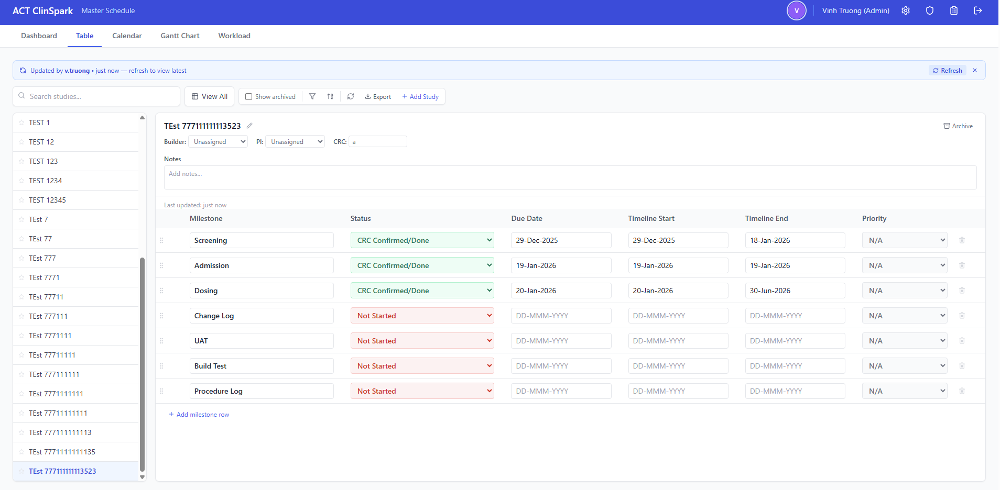
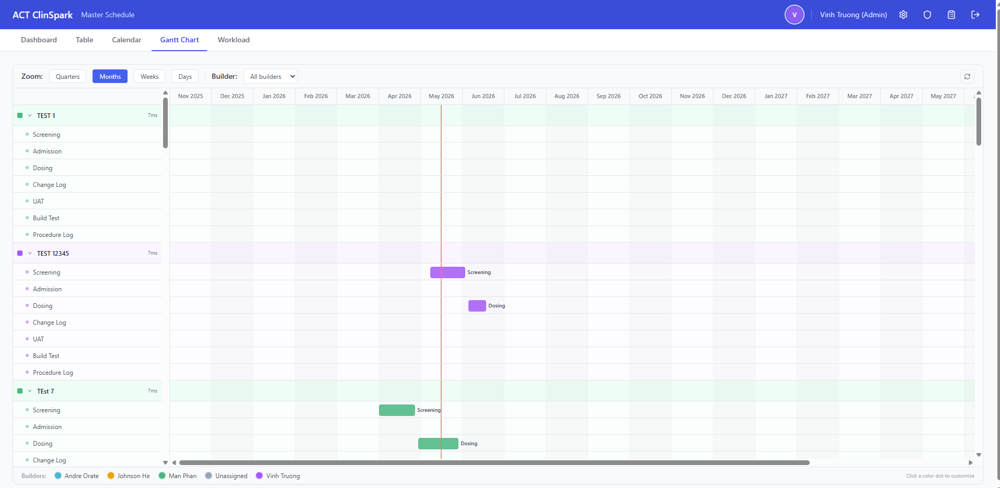
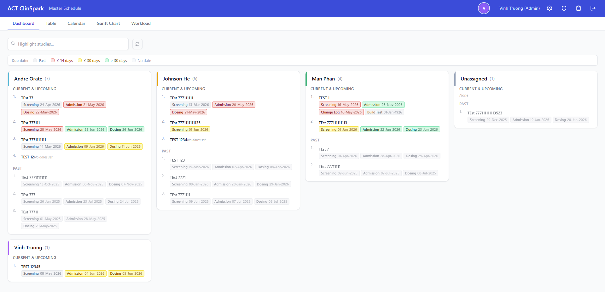
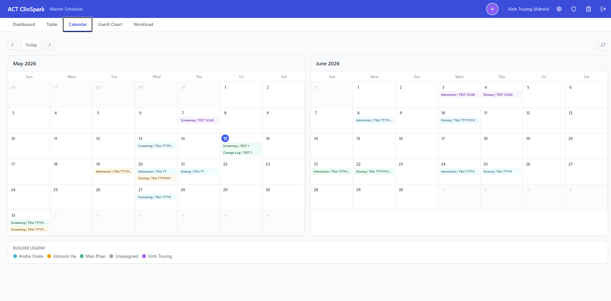

ClinSpark Master Schedule
A full-stack clinical trial master schedule (v2.1.0) built for coordinators to track study milestones in one place. It offers five views — Dashboard, Table, Calendar, Gantt, and Workload — with real-time presence, inline editing, color-coded date chips, workload analytics, and a complete audit trail, replacing a fragmented collection of spreadsheets.
The Problem
Clinical trial E-Source Builders manage dozens of overlapping studies simultaneously, each with a sequence of critical milestones (screening, admission, dosing, UAT, build test, etc.) that must be tracked for multiple cohorts and study events. The existing process relied on shared Excel spreadsheets:
- No live visibility into who was editing — concurrent edits caused data loss.
- Milestone dates were scattered across separate tabs and files, making cross-study scheduling impossible at a glance.
- No audit trail: changes were anonymous and irreversible.
- Generating a formatted schedule for distribution required hours of manual reformatting.
- Status and priority tracking (blocked, pending, confirmed) were informal and inconsistently maintained.
Solution Overview
Study & Milestone Management
- Create and edit studies with protocol number, sponsor, PI, and phase
- 7 milestone rows per study: Screening, Admission, Dosing, Change Log, UAT, Build Test, Procedure Log
- Per-milestone: date, status, priority, assignee, and notes fields
- Archive and restore studies to keep the active view focused
- Inline editing with DD-MMM-YYYY date auto-formatting and visual save feedback
Gantt Chart View
- Timeline visualization spanning all active studies and their milestone dates
- Color-coded by milestone type for at-a-glance cross-study scheduling
- Zoomable and scrollable date axis
- Tooltip details on hover: study name, milestone, date, status, assignee
- Filterable by study, milestone type, and date range
Real-Time Presence
- Heartbeat polling tracks which users are currently active
- Active users bar shows who is online across the entire platform
- Presence state expires automatically when heartbeats stop
- 30-second polling keeps the UI current without WebSocket infrastructure
Security & Access Control
- JWT authentication with access and refresh tokens, PBKDF2-SHA256 password hashing
- JTI-based session revocation: logout immediately invalidates the session server-side
- Refresh token rotation on every renewal cycle
- Brute-force rate limiting on login (5 attempts / 5 min)
- Admin panel for user CRUD, role assignment, and password reset
- Forward-only schema migrations applied automatically on backend startup
Export & Audit
- One-click Excel export of the full schedule, formatted for distribution
- Complete audit trail: every create, edit, and delete is logged with user and timestamp
- Audit log viewer with date-range filtering and export
- Change-tracker banner alerts users when another user has modified the schedule
User Experience
- Five coordinated views: Dashboard, Table, Calendar, Gantt, and Workload
- Dashboard color-coded chips: red (≤14 days), yellow (≤30 days), green (>30 days), gray (past/no date)
- Workload bar chart + line graph with milestone-name filter
- Always-editable milestone table with DD-MMM-YYYY date auto-formatting
- Account settings for self-service username and password changes
- Responsive layout that works on tablets and wide monitors
Architecture
The application follows a clean separation between a React SPA frontend and a Python FastAPI backend, communicating over a REST API with JSON. Neon serverless PostgreSQL handles all persistent state. The frontend is served as a static site from Netlify; the backend runs on Render's managed container platform.
- Frontend: React 18, TypeScript, Vite, TailwindCSS, Zustand (state), React Router v6, Axios (HTTP)
- Backend: Python 3.11+, FastAPI, async psycopg (v3), Pydantic v2, python-jose (JWT), PBKDF2-SHA256 (passwords)
- Database: PostgreSQL 15+ (Neon serverless) with forward-only migrations applied at startup
- Deployment: Netlify (frontend) + Render (backend API)
- Cross-origin auth: JWT access and refresh tokens shared across Netlify and Render origins
Tech Stack
Screenshots




Challenges & Solutions
- Cross-origin auth with Netlify and Render: The frontend and backend run on different domains, so cookie and CORS settings must be explicit. I configured secure, SameSite-aware token handling and environment-driven CORS origins so development and production behave consistently.
- Session revocation at logout: Standard JWTs are stateless and can't be revoked before expiry. I introduced a sessions table keyed by JTI. Every authenticated request checks the JTI; logout deletes the row, immediately invalidating the token without waiting for expiry.
- Forward-only database migrations: Schema changes apply automatically on each backend startup. I used a lightweight migration runner that records the current schema version and applies ordered SQL deltas, making deploys safe and reversible only through new migrations.
- Real-time presence without WebSockets: A heartbeat endpoint and 30-second polling keep the active-users bar current without adding infrastructure. Presence state is lightweight and expires automatically when heartbeats stop.
- Audit log retention: Audit records accumulate quickly. I added a 60-day auto-purge on startup so the log table stays bounded while keeping the most recent history available.
Outcomes & Impact
- Replaced disconnected Excel spreadsheets with a single source of truth accessible to the entire team from any device.
- Always-editable milestone table lets any authorized user update data without blocking, while the audit trail captures exactly who changed what.
- Schedule exports that previously took 30–60 minutes of manual formatting now take one click.
- Full audit trail allows supervisors to review who changed what and when — a compliance requirement in clinical research environments.
- Deployed and in active use by the clinical operations team.
Lessons Learned
- Cross-origin cookie authentication is deceptively tricky in production. Browser SameSite policies, Secure requirements, and CORS headers all interact — documenting the expected values for each environment (local, staging, production) upfront would have saved debugging time.
- Stateless JWTs and session revocation are fundamentally at odds. The JTI table pattern works well, but it's important to set realistic expectations about the overhead of one DB lookup per authenticated request versus the security guarantee it provides.
- Optimistic UI updates feel fast but require careful rollback logic. Every inline save needs a clear "saving…", "saved", and "failed" state so users trust the data persisted correctly.
- Automated database migrations are worth the investment early. Adding them after tables have data is significantly harder than designing the migration system from the first table.
Future Improvements
- WebSocket-based live updates to replace the polling change-detection system.
- Study template system: clone a previous study's milestone structure as a starting point for new studies.
- Email/notification integration: alert assignees when a milestone is updated or a deadline is approaching.
- Mobile-optimized view for quick read-only lookups on phones.
- CSV import to bulk-create or update studies from existing spreadsheet data.